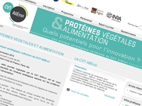
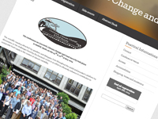
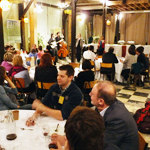

Séminaires Agriculture Biologique - Inra - Sept-nov. 2014, Paris, 125 participants

Séminaire Protéines Végétales - CVT AllEnvi - Nov. 2014, Paris, 127 participants

Solibam (en anglais) - Inra - Juillet 2014, Nantes, 119 participants

AnimalChange (en anglais) - Inra Transfert - Mai 2014, Madrid,

DinABio - Inra - Nov. 2013, Tours, 300 participants

Ecole-chercheurs - Inra - Mai 2011, La Colle-sur-Loup, 120 participant

Eucarpia (en anglais) - Inra - Déc. 2010, Paris, 126 participants